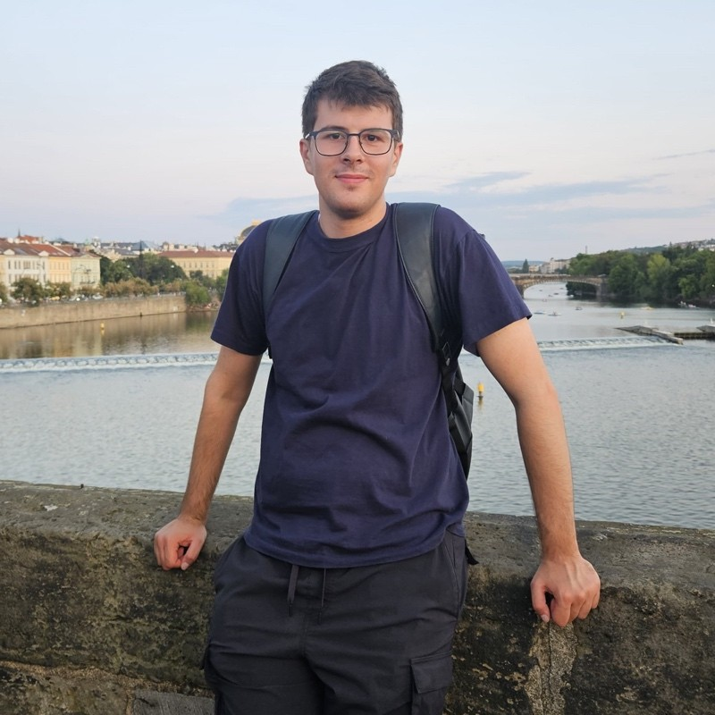

|
Faris Hajdarpasic
I am a Master student at the University of Bonn
specializing in Mobile Sensing and Robotics.
During my ongoing studies I have been working on various projects
related to 3D computer vision and SLAM,
with multiple research groups of the
Center for Robotics University of
Bonn.
Currently I am doing my Master Thesis at the
StachnissLab (Photogrammetry and Robotics
Lab)
and also I am research student assistant at the
Humanoid Robots Lab.
Mapping is amazing!
Creating detailed maps of the world is a cool and useful task one can do.
I want to contribute to this field and enhance maps even further.
I'm inspired by various people and companies/startups that are working on this.
Do not hesitate to contact me if you are interested in my work or have any
questions.
I am always open to new opportunities and collaborations.
Let's connect and make maps even better, together!
Email /
LinkedIn
/
X /
GitHub
|

|
Note
My portfolio is still under construction.
I am working on it and updates will follow soon.
|
Research
I'm interested in 3D SLAM, computer vision and computer graphics.
Love C++ lectures.
Partially experienced with GPU computing, and ready to learn more.
About to start exploring more about the state-of-the-art deep learning methods
for
3D reconstruction.
|
|
|
Large-Scale LiDAR-Visual Mapping using Gaussian Splatting
and Neural Distance Field
Faris Hajdarpasic,
Yue Pan,
Xingguang Zhong,
Cyrill Stachniss
PDF
and Presentation
Maps of the environment are essential for autonomous car navigation.
Metric maps should be ideally both - geometrically accurate and photorealistic.
To achieve this we propose a method that combines LiDAR and camera data
and utilizes the radiance field and signed distance field.
|
|
|
Parallel Computing Lab: NVIDIA CUDA C++ Programming
Faris Hajdarpasic,
Tobias Zaenker,
Maren Bennewitz
GitHub Repository
The goal of this project was to become familiar with the NVIDIA CUDA programming
framework in C++,
and to implement the A* path planning algorithm based on a computed Visibility
Graph, both on the CPU and GPU.
|
|
|
Monocular and Stereo Visual Odometry for Autonomous
Vehicles
Faris Hajdarpasic,
Dinko Osmankovic
GitHub Repository
Visual odometry is a technique used to estimate the pose of a vehicle
in world frame using only visual information from a camera.
In this project, we implemented a visual odometry based on single camera and
stereo camera.
|
|
{kind=link}